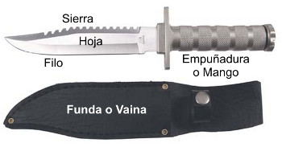
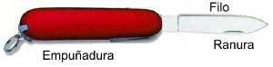
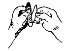
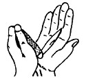
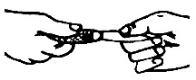
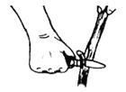
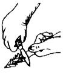
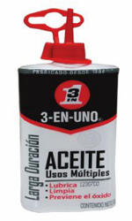

Cuchillo y Navaja
El Cuchillo consta de una delgada hoja, normalmente metálica, frecuentemente acabada en punta y con uno o dos lados afilados, y de un mango por el que se sujeta.
Se ha usado como herramienta y como arma desde la Edad de Piedra, tal y como han evidenciado las excavaciones, en las que pueden verse ejemplares de piedra, con una antigüedad de 2,5 millones de años.
La Navaja es un cuchillo cuya hoja rota sobre un eje que la une al mango o empuñadura, para que el filo quede guardado entre dos cachas o una hendidura hecha a propósito.
También existen navajas cuya hoja se desliza longitudinalmente, dentro y fuera de la empuñadura; pero no son recomendables para el uso en campismo.
Normas para el uso del Cuchillo y la Navaja
Existe una regla simple, una Navaja o Cuchillo mal afilado es mucho más peligrosa o peligroso que uno bien afilado… ya que si está embotado haces mucho esfuerzo al cortar y corres el peligro de no controlarlo, uno afilado hace el corte sin esfuerzo y es fácil de manejar.
Para abrirla toma la empuñadura con la mano izquierda, y con la derecha hala la hoja por la ranura (1).Para cerrarla, Tomal de la empuñadura con la mano izquierda y ciérrala con la palma de la mano derecha (2).
*Si eres zurdo puedes hacer esta operación como te sea más cómodo.
Si pasas el cuchillo o la navaja abierta, toma la hoja entre tus dedos con el filo hacia fuera, y que la reciban por el mango o empuñadura.

Cuando
los uses tómalos por la empuñadura, nunca por la hoja. Fíjate
que la empuñadura esté limpia y seca.
Sostenlo firmemente y haz movimientos uniformes y definidos.
Cuando talle o cortes, empújalo hacia el lado opuesto a tu cuerpo. Nunca camines o corras con el cuchillo desnudo en la mano y mucho menos con la punta hacia el frente, la punta debe estar mirando al suelo y la parte afilada para atrás; pero lo ideal es emplear la funda para el transporte del mismo.
Una norma básica de buena educación del Scout, es no hacer ostentación de armas blancas, podrás llevar tu cuchillo o navaja al cinto; pero al llegar a una zona poblada, deberás guardarlo.

• Después de usarlos límpialos cuidadosamente, antes de cerrarlos o guardarlos en su funda, eso evitará que se oxiden o manchen.
• En el caso de la Navaja debes poner una gota de aceite en el pivote.
• Afílalos frecuentemente, con una piedra de amolar adecuada, colocándolos en un lugar firme. Si mojas un poco la piedra ayuda a obtener un filo mas fino.
• Cambia los mangos o empuñaduras defectuosas o endebles.
• No los uses como destornilladores, martillos, palas, etc. Ni los pongas a calentar en el fuego, ya que pierden su temple.